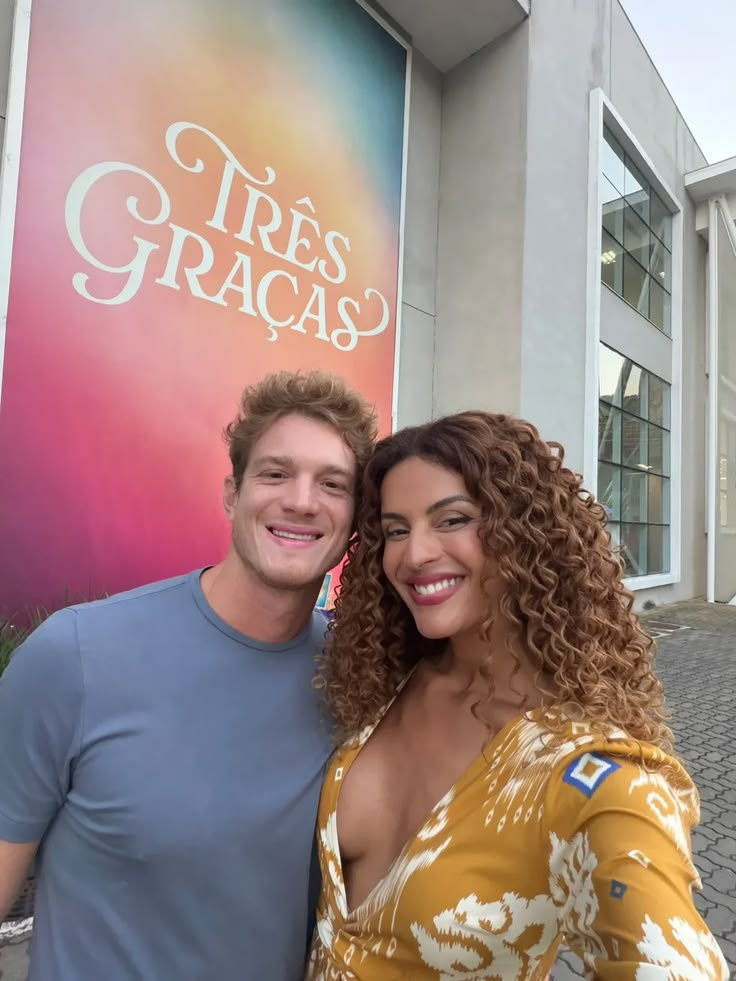

TRÊS GRAÇAS

A novela Três Graças é uma história emocionante que mistura drama, romance e conflitos familiares, mostrando a vida de várias personagens e como suas histórias se cruzam ao longo do tempo.
A trama principal gira em torno de três mulheres de gerações diferentes, que representam fases da vida: juventude, maturidade e velhice. A mais jovem é sonhadora e busca seu espaço no mundo, vivendo amores intensos e descobertas. A mulher adulta enfrenta responsabilidades como trabalho, família e relacionamentos complicados. Já a mais velha traz sabedoria, experiência e serve como base emotional para as outras, mostrando valores como fé e resistência.
Além dessas protagonistas, a novela se desenvolve com outros personagens importantes que trazem ainda mais emoção para a história. Lorena e Juquinha (Eduarda), por exemplo, vivem uma relação cheia de sentimentos e conflitos, abordando temas como identidade, aceitação e compreensão. É uma história delicada que mostra o crescimento pessoal das duas.
Gerluce e Paulinho formam um casal marcado por brigas, reconciliações e aprendizados. Gerluce tem uma personalidade forte e impulsiva, enquanto Paulinho tenta amadurecer ao longo da trama. Juntos, eles mostram como os relacionamentos podem ser difíceis, mas também transformadores.
Viviane e Leonardo vivem um romance intenso, cheio de paixão e conflitos. Viviane é determinada e, às vezes, ambiciosa, enquanto Leonardo tenta equilibrar seus sentimentos com decisões difíceis. A relação deles é marcada por escolhas importantes que impactam suas vidas.
Já Maggye e Júnior trazem um clima mais leve e jovem para a novela. Os dois vivem um amor cheio de energia, descobertas e momentos felizes, mas também enfrentam desafios que fazem parte do crescimento e da vida a dois.
Ao longo da novela, surgem diversos conflitos como traições, segredos do passado, disputas familiares e dilemas pessoais. Esses acontecimentos colocam todos os personagens à prova, mostrando suas fraquezas e forças.
O principal tema da novela é a força das relações humanas, especialmente o papel da família, do amor e da superação. A história ensina que, apesar das dificuldades, é possível crescer, aprender e seguir em frente.
Assim, Três Graças se destaca por mostrar diferentes histórias conectadas, com personagens que representam várias fases da vida e diferentes formas de amar, errar e recomeçar.
BBB26

O Big Brother Brasil 26 (BBB26) é um reality show em que um grupo de participantes vive confinado em uma casa, sem contato com o mundo exterior, sendo observado por câmeras o tempo todo. Durante o programa, eles precisam conviver, formar alianças, enfrentar provas e lidar com conflitos do dia a dia. A cada semana, acontecem desafios como a Prova do Líder, que define quem terá vantagens no jogo, e a formação do Paredão, quando alguns participantes são indicados para a eliminação. O público vota para decidir quem deve sair, e o jogo continua até restar apenas um vencedor.
Dentro desse contexto, Jordana, Jonas, Ana Paula e Alberto representam diferentes formas de jogar. Jordana é uma participante mais estratégica e observadora, preferindo pensar antes de agir e evitando conflitos desnecessários. Já Jonas é competitivo e impulsivo, sempre querendo se destacar nas provas e mostrar força no jogo, o que às vezes pode causar desentendimentos. Ana Paula se destaca pelo carisma e pela facilidade de se relacionar com os outros, apostando no jogo social para avançar na competição. Por outro lado, Alberto tem um perfil mais tranquilo, buscando manter a harmonia na casa e evitando brigas, embora isso possa fazer com que ele pareça menos ativo no jogo.
Assim, o BBB26 se torna interessante justamente pela convivência entre esses diferentes perfis, onde estratégia, emoção e relacionamento com o público são fundamentais para permanecer na casa e chegar até a final.
Este é um exemplo de site criado apenas com HTML e um pouco de CSS interno.